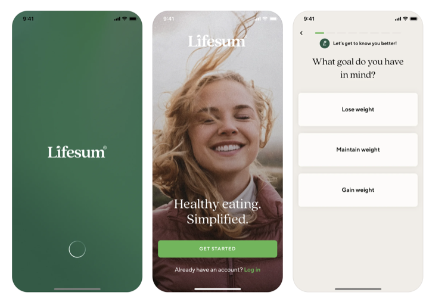

Splash, claim, et le rythme de la séquence d'ouverture
La réponse aux questions
Synthèse d'abord : les 4 verdicts. Les écrans qui les fondent suivent, lus un par un. La règle de rythme (verdict 3) est le cœur de la mission.
1 · Comment composer le SPLASH ?
Solide Le splash est l'écran de lancement (visible 0,5 à 2 s, le temps du chargement). Son seul job : poser l'identité. Composition unanime chez les top-tier : un aplat de couleur (uni ou léger dégradé) + UN seul élément centré (logo OU mascotte) + beaucoup de vide. Le restraint fait le premium : Noom n'affiche qu'une étoile coral sur du crème, Aumio une silhouette de mascotte monochrome sur navy, Headspace juste la moitié d'un visage orange qui sourit et deux mots.
Solide Ce qu'on n'y met jamais : pas de CTA, pas de carrefour compte, pas d'argumentaire, pas de catalogue en fond, pas de fausse barre de statut « 13:11 ». Le texte, s'il y en a, c'est 0 à 2 mots d'ambiance (Headspace : « Breathe out »), pas une phrase de vente. Le splash pose la marque, il ne vend pas. La vente, c'est l'écran d'après.
2 · Comment composer le CLAIM (l'écran juste après) ?
Solide Le claim (ou welcome) est le 1er écran d'onboarding. Structure constante chez les 4 wellness : un visuel héros en haut (illustration, photo, ou collage), un claim court dessous (3 à 6 mots en gros + une ligne de soutien), puis la zone d'action en bas. Exemples de claims : « Welcome to Headspace / Support for all of life's moments », « Healthy eating. Simplified. », « Results that last », « Science-backed AI Cosmetologist you can trust ».
Observé Le carrefour nouveau / déjà-client se joue ici. Deux écoles d'agencement : (1) CTA primaire + lien login discret sous le bouton (Lifesum « GET STARTED » + « Already have an account? Log in » ; Lóvi « Sign in with email » + « I don't have an account ») ; (2) deux boutons empilés de poids égal, action principale puis « Log in » secondaire (Headspace « Create an account » bleu + « Log in » blanc ; Noom « Get started » coral + « Log in » bordé). Les deux sont propres. Le lien discret va plus vite au compte ; les deux boutons rendent le carrefour plus lisible pour un public moins expert (notre cas).
3 · LA RÈGLE DE RYTHME : splash -> claim -> écrans suivants
Observé Il y a bien une règle, et elle est nette sur les 4 wellness comme sur Aumio : la densité fait une courbe en cloche. Le splash est l'écran le plus dépouillé de toute l'app (1 signe, beaucoup de vide). Le claim est le plus riche et le plus coloré (le visuel héros, le pic de saturation, l'émotion). Puis dès la création de compte et les questions d'onboarding, ça redescend : fonds neutres (blanc, crème, gris très clair), formulaires sobres, couleur réduite à l'accent du CTA. On monte en intensité, on pose le pic au claim, on redescend pour faire travailler l'utilisateur.
Observé La couleur d'accent est le fil rouge. Ce qui ne change jamais d'un écran à l'autre, c'est la couleur signature : l'orange Headspace, le coral Noom, le vert Lifesum, le violet Lóvi. Elle voyage du splash (le signe) au CTA de chaque écran suivant. Le décor change, la palette change en intensité, mais l'accent reste : c'est lui qui dit « tu es toujours dans la même app ». Estim. C'est ce qui permet de varier la composition sans casser la cohérence perçue.
4 · Quelles écoles : continuité ou rupture de fond ?
- Continuité de fond : le splash et le claim partagent le même fond (même couleur, même dégradé). Le splash « se remplit » pour devenir le claim. Aumio : silhouette violette sur navy -> le même navy, la silhouette devient la mascotte en couleur + le claim. Noom : crème + étoile -> le même crème + le visuel + le claim. Lóvi : gradient violet -> le même gradient + le claim. Effet : fluide, premium, une seule respiration.
- Rupture franche : le claim change radicalement de fond par rapport au splash. Headspace : splash blanc et minimal -> claim sur aplat jaune/ambre saturé et illustré. Lifesum : splash vert uni -> claim sur grande photo lifestyle. Effet : un « lever de rideau », plus spectaculaire, plus risqué (la bascule doit être maîtrisée).
- Estim. Pour Kidsono : la continuité (façon Aumio) est la voie la plus sûre et la plus cohérente avec un univers de marque encore inconnu, qu'il faut installer avant de surprendre.
Les exemples, par écran
Les 4 références wellness sont des planches de 3-4 écrans : on lit l'enchaînement de gauche à droite. Puis les références du corpus enfant pertinentes. Chaque planche est annotée : ce que je repère, l'intérêt pour Kidsono.
Quand le splash « se remplit » pour devenir le claim
Même fond du splash au claim. La séquence respire d'un seul tenant, puis redescend au neutre à la création de compte.


Quand le claim change radicalement de décor (lever de rideau)
Le splash minimal puis un claim sur un fond tout autre : aplat saturé illustré, ou photo lifestyle. Plus spectaculaire, plus exigeant à exécuter.


Ce que font les apps enfant solides
Mêmes principes que le wellness : un signe, du vide. Du plus sobre au plus illustratif.

Le claim + le carrefour « je commence » / « j'ai un compte »
Mêmes ingrédients que le wellness, sur cible familles : un claim, le carrefour nouveau / déjà-client, parfois une preuve de sécurité.


Le cas Kidsono actuel
L'écran d'entrée actuel essaie d'être splash, welcome et accroche à la fois, et n'est ni l'un ni l'autre.

Le rythme de la séquence d'ouverture
La règle observée, synthétisée. C'est la réponse au cœur de la mission : ce qui change et ce qui reste d'un écran au suivant.
Ce qui CHANGE d'un écran à l'autre : la densité visuelle, la saturation du fond, la composition (1 signe -> visuel héros -> slides -> formulaire). Ce qui RESTE : la couleur d'accent signature (le fil rouge), la typo de marque, et le sentiment d'être dans la même app. Estim. Le décor peut varier librement tant que l'accent voyage de bout en bout.
Ce que ça donne pour Kidsono
Splash -> claim -> carrousel : la séquence concrète
- Splash (à créer, voie continuité façon Aumio) : l'ourson jaune en silhouette / aplat sobre, centré sur un fond crème (ou un aplat jaune vif), une pose calme et iconique (pas la pose skate), beaucoup de vide, micro-animation d'apparition. Texte : 0 à 2 mots de voix enfant maximum, ou rien. Zéro CTA, zéro carrefour. Estim. Le jaune Kidsono devient le fil rouge de toute la séquence.
- Claim (à créer, le pic) : continuité de fond (même crème / jaune que le splash), l'ourson passe en couleur pleine (le mécanisme Aumio : la silhouette se révèle), UN claim de voix parent (vouvoiement, premium), par ex. « La plus belle app de livres audio pour vos enfants. » ou la signature « Du bon son pour bien grandir. ». Puis le carrefour : deux boutons lisibles « Je commence » (primaire jaune) / « J'ai déjà un compte » (secondaire), pour régler proprement le routage aujourd'hui brutal (« Oups, tu n'es pas connecté »). Un seul hook, pas l'argumentaire.
- Enchaînement vers le carrousel crème (déjà conçu : A, B, C) : le carrousel hérite du même fond crème que le splash et le claim, ce qui sert la continuité. La règle de rythme impose juste de baisser l'intensité après le pic du claim : slides structurées, une idée par slide, couleur tenue par l'accent jaune et les illustrations, pas par un fond saturé. Le claim reste l'écran le plus chargé émotionnellement ; le carrousel argumente plus calmement.
- À éviter : tout fusionner comme aujourd'hui (mascotte skate + « C'est ti-par ! ») ; un splash qui vend ou qui route ; un claim en voix enfant (le claim est voix parent, c'est lui qui amorce l'achat) ; un carrousel qui re-sature le fond et fait retomber la courbe au lieu de la prolonger.
L'avis
Force : la voie « continuité + révélation » (silhouette au splash qui devient l'ourson en couleur au claim) est directement copiable sur Aumio, une référence enfant premium qui résout exactement notre tension : un personnage cartoon rendu élégant par le restraint, sans renier la DA. La règle de rythme (minimal -> pic -> neutre, accent en fil rouge) est observée de façon convergente sur 4 apps top-tier indépendantes, ce qui en fait un standard fiable, pas une intuition. Solide
Risques : la mascotte Kidsono est très colorée et « cartoon » ; sans le restraint (silhouette ou pose calme + vide), le splash retombera dans le « enfantin chargé ». Le crème, fond doux, donne moins de contraste premium qu'un navy (Aumio) ou un noir (Storytel) : il faudra que l'ourson et la typo Cooper Black portent le premium tout seuls. Observé La continuité de fond suppose que carrousel et claim partagent vraiment le crème, sinon on perd l'argument. Estim.
Position vs standard : au standard sur l'archétype (signe centré au splash, claim + carrefour à l'écran suivant) et sur la courbe de densité. L'enjeu Kidsono est uniquement l'exécution (le restraint du splash, le bon claim de voix parent), pas le concept. Le choix « continuité » plutôt que « rupture » est le plus prudent pour une marque inconnue qu'il faut d'abord installer.
Audit actualisé à partir des 4 planches wellness (Headspace, Lifesum, Lóvi, Noom) et du corpus benchmark (38 apps), captures lues une par une en pleine résolution. Niveaux : Solide vu sur captures · Observé pattern récurrent du panel · Estim. projection directionnelle. Famille des perdants citée en contre-exemple uniquement. Mission conseil Kidsono, 2026-06-16.